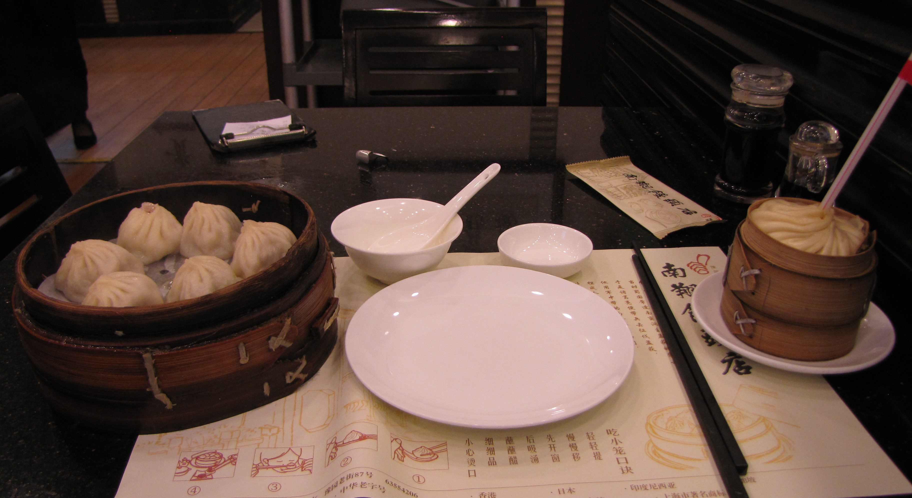
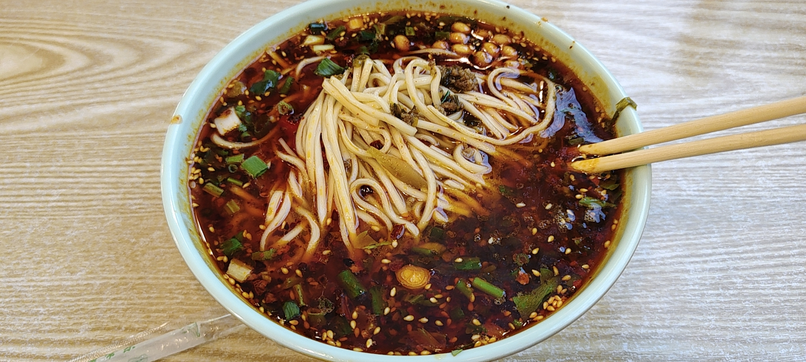
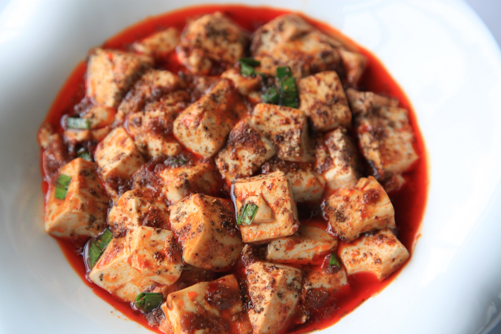

Shanghai
Nanxiang Mantou Dian (Yu Garden)

Representative dish photoConvenient xiaolongbao stop inside the Yu Garden area.
Suggested dish: Xiaolongbao
Verify before travelTrip 1 Food Navigation
Named working options, suggested dishes, map searches, and directions from the selected hotels.
Shanghai
These are useful starting points, not reservations. Verify the branch, hours, and current reviews close to travel.
Shanghai

Representative dish photoConvenient xiaolongbao stop inside the Yu Garden area.
Suggested dish: Xiaolongbao
Verify before travelShanghai
Well-known Shanghai soup-dumpling specialist.
Suggested dish: Pork or crab xiaolongbao
Verify before travelShanghai
Another strong soup-dumpling option in central Shanghai.
Suggested dish: Crab-roe xiaolongbao
Verify before travelShanghai
Reliable, comfortable option during the French Concession day.
Suggested dish: Xiaolongbao and noodles
Verify before travelHuangshan
These are useful starting points, not reservations. Verify the branch, hours, and current reviews close to travel.
Huangshan

Representative dish photoThe lowest-friction dinner after arrival or a village sightseeing day.
Suggested dish: Hotel regional menu
Verify before travelHuangshan
Working lunch category near Hongcun; choose a busy, clean restaurant with picture menus.
Suggested dish: Huizhou shared dishes
Verify before travelHuangshan
Practical mountaintop dinner and breakfast option.
Suggested dish: Simple mountain meals
Verify before travelZhangjiajie
These are useful starting points, not reservations. Verify the branch, hours, and current reviews close to travel.
Zhangjiajie
 Representative dish photo
Representative dish photo
Commonly recommended traveler-friendly option in Wulingyuan.
Suggested dish: Hunan shared dishes
Verify before travelZhangjiajie
Representative dish photo
Working option for local Tujia and Hunan-style food.
Suggested dish: Tujia specialties
Verify before travelZhangjiajie
Representative dish photo
Easy fallback after long park days.
Suggested dish: Hotel dining
Verify before travelFenghuang
These are useful starting points, not reservations. Verify the branch, hours, and current reviews close to travel.
Fenghuang
Representative dish photo
Working Hunan dinner option near the ancient town.
Suggested dish: Hunan dishes
Verify before travelFenghuang
Representative dish photo
Convenient local-style restaurant option near the old town.
Suggested dish: Miao and Hunan-style shared dishes
Verify before travelFenghuang
Useful for coffee or a familiar breakfast-style stop by the river.
Suggested dish: Coffee and simple Western-style food
Verify before travelChengdu
These are useful starting points, not reservations. Verify the branch, hours, and current reviews close to travel.
Chengdu

Representative dish photoHistoric restaurant associated with the city’s signature mapo tofu.
Suggested dish: Mapo tofu, Zhong dumplings
Verify before travelChengdu
 Representative dish photo
Representative dish photo
A more comfortable hotpot experience for a group.
Suggested dish: Divided-broth hotpot
Verify before travelChengdu
Casual local restaurant for bold Sichuan flavors.
Suggested dish: Sichuan home-style dishes
Verify before travelChengdu
Representative dish photo
Easy hotel fallback for the arrival or final evening.
Suggested dish: Hotel dining
Verify before travel